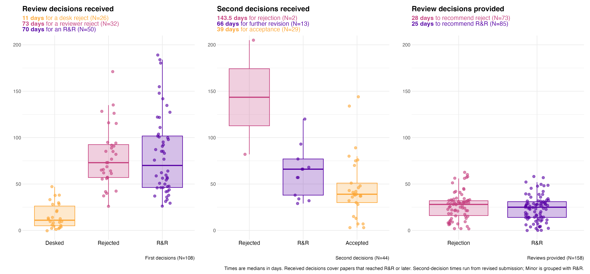
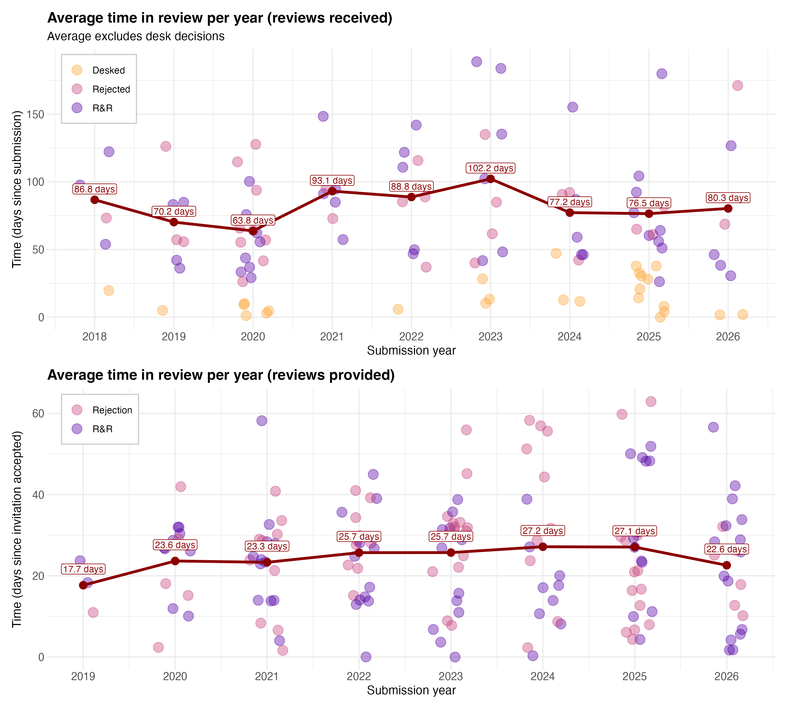
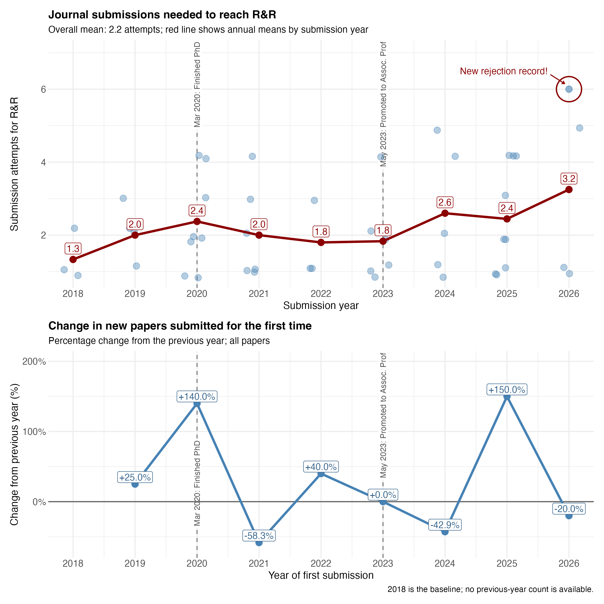

Peer Review Data
My experience of peer review as an author and reviewer: decision times, annual trends, and the path to revise and resubmit (R&R).
How long do review decisions take?
This figure compares decision times for my submissions with the time I take to provide reviews. Median first-decision times are 11 days for desk rejections, 73 days for rejections after review, and 70 days for R&R. My median review times are 28 days when recommending rejection and 25 days when recommending R&R. Received decisions cover papers that reached R&R or later; second-decision times run from revised submission.

How have review times changed?
Annual averages show how long my papers spend in review and how quickly I return reviews. Desk decisions are shown but excluded from the received-review averages. In 2026, the averages are 80.3 days for reviews received and 22.6 days for reviews provided; individual cases show substantial variation.

How many submissions does it take to reach R&R?
My papers take an average of 2.2 journal submissions to reach R&R, rising to 3.2 for the 2026 submission cohort. The figure also marks my new rejection record in 2026: six submissions to reach R&R. Apparently, my papers are taking the scenic route to publication. The lower panel tracks the annual percentage change in papers submitted for the first time. Dashed lines mark completing my PhD in March 2020 and promotion to Associate Professor in May 2023.
